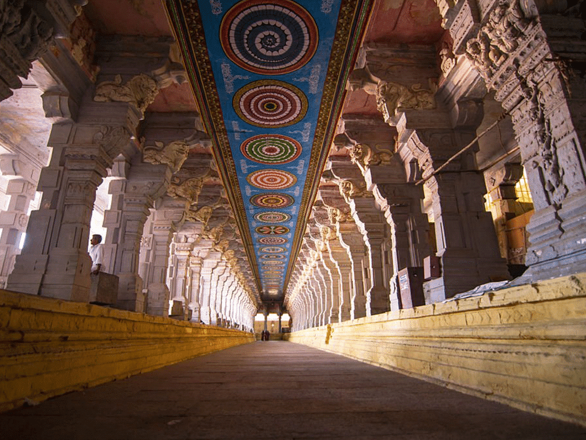
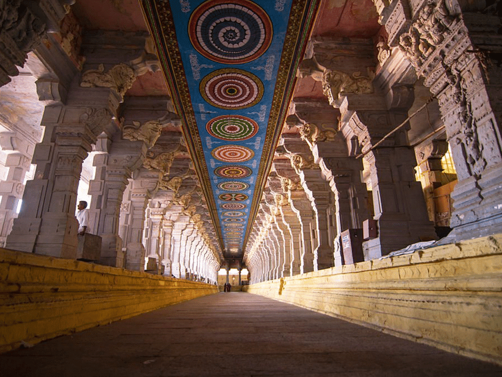

Itinerary
Day 1: Arrival in Madurai
- Arrive in Madurai and check into your hotel.
- Explore local markets and enjoy traditional South Indian cuisine for dinner.
Day 2: Meenakshi Temple Exploration
- Visit the Meenakshi Temple complex, exploring its architecture, shrines, and sculptures.
- Attend the evening Aarti (prayer ceremony) at the temple.
Day 3:Tirumalai Nayak Palace and Gandhi Museum
- Visit Tirumalai Nayak Palace in the morning, admiring its grandeur and historical significance.
- Explore the Gandhi Memorial Museum in the afternoon to learn about Mahatma Gandhi's life and India's freedom struggle.
Day 4: Alagar Kovil and Thirumalai
- Visit Alagar Kovil, a hilltop temple dedicated to Lord Vishnu, known for its scenic views and religious importance.
- Explore Thirumalai, a popular hill station near Madurai, enjoying nature walks and panoramic views.
Day 5: Rameswaram Day Trip
- Take a day trip to Rameswaram, a sacred island known for its temples and beaches.
- Visit Ramanathaswamy Temple and enjoy leisure time by the sea.
Day 6: Madurai Temples Tour
- Explore other significant temples in Madurai such as Koodal Azhagar Temple and Pazhamudhir Solai.
- Experience local culture and traditions through temple visits and interactions with devotees.
Day 7: Periyar Wildlife Sanctuary Excursion
- Travel to Periyar Wildlife Sanctuary for a day of wildlife spotting, boat rides, and nature walks.
- Experience the rich biodiversity of the Western Ghats region.
Day 8: Madurai Local Cuisine and Shopping
- Explore local eateries to savor Madurai's specialties like Meen Kuzhambu, Kari Dosai, and Jigarthanda.
- Spend time shopping for handicrafts, textiles, and spices in bustling markets.
Day 9: Kanyakumari Day Trip
- Take a day trip to Kanyakumari, the southernmost tip of mainland India.
- Visit Vivekananda Rock Memorial, Thiruvalluvar Statue, and enjoy breathtaking sunset views.
Day 10: Departure from Madurai
- Depending on your departure time, visit any remaining local attractions or markets.
- Check out from your hotel and depart from Madurai with fond memories of your trip.
Places to Visit
- The Meenakshi Amman Temple, located in Madurai, Tamil Nadu, is a renowned and ancient Hindu temple dedicated to Goddess Meenakshi (Parvati) and her consort Lord Sundareswarar (Shiva).
- Historical and Mythological Significance:
Ancient Origins: The temple's origins can be traced back to the reign of Pandya King Kulasekara Pandyan in the 6th century CE, although significant expansions and renovations took place over centuries.
Mythological Importance: According to Hindu mythology, Goddess Meenakshi is believed to be the incarnation of Goddess Parvati, and her marriage to Lord Sundareswarar is celebrated annually with grand festivities.
Cultural Heritage: The temple is not only a religious center but also a symbol of Tamil Nadu's rich cultural and architectural heritage, showcasing Dravidian temple architecture at its finest. - Architecture and Layout:
Gopurams: The temple complex is known for its towering gopurams (gateway towers) adorned with intricate sculptures depicting various mythological scenes, deities, and celestial beings.
Mandapams: Explore the numerous mandapams (halls) within the complex, such as the Thousand Pillar Hall, each featuring unique architectural styles and historical significance.
Shrines: The main shrines are dedicated to Goddess Meenakshi and Lord Sundareswarar, with smaller shrines for other deities like Ganesha, Murugan, and Vishnu also present. - Attractions:
Golden Lotus Tank: A sacred water tank within the temple complex used for religious rituals and ceremonies, surrounded by ornate pillared corridors.
Hall of Thousand Pillars: Known for its sculpted pillars, each intricately carved with mythological figures and motifs, creating a mesmerizing visual spectacle.
Temple Festivals: The temple hosts grand festivals like Meenakshi Thirukalyanam (divine wedding) and Chithirai Thiruvizha (annual festival) with processions, music, dance, and cultural performances. - Visitor Information:
Visiting Hours: The temple is open for devotees and visitors from early morning till late evening, with specific timings for different rituals and darshan (viewing).
Dress Code: Modest attire is required, covering shoulders and knees. Footwear is not allowed inside the inner sanctum; there are facilities for shoe storage.
Entry and Darshan: While entry to the temple is generally free, there are options for special darshan experiences with varying fees for devotees seeking closer views of the deities. - Spiritual Experience:
Rituals and Offerings: Witness traditional temple rituals such as Abhishekam (sacred bathing), Arati (prayer ceremony), and offerings of flowers, fruits, and holy water.
Darshan: Seek blessings and spiritual solace during darshan of Goddess Meenakshi and Lord Sundareswarar, experiencing the divine energy and devotion of the temple atmosphere.
Meenakshi Temple
Tirumalai Nayak Palace
- The Tirumalai Nayak Palace is a historic monument located in Madurai, Tamil Nadu, India. It is renowned for its impressive architecture, rich history, and cultural significance.
- History: The palace was built in the 17th century by King Tirumalai Nayak, a ruler of the Nayaka dynasty of Madurai.
It served as the residence and administrative headquarters of the king during his reign. - Architecture:The palace exhibits a blend of Dravidian and Islamic architectural styles, reflecting the cultural influences of that era.
Notable features include massive pillars, ornate arches, large courtyards, and intricately carved domes. - Attractions:
Swarga Vilasam (Celestial Pavilion): This grand hall was used by the king for various ceremonial and cultural events. It features huge pillars and a majestic dome ceiling.
Thirumalai Nayak's Durbar Hall: The Durbar Hall is known for its colossal pillars and exquisite stucco work depicting scenes from Hindu mythology and royal ceremonies.
Courtyards and Gardens: The palace complex includes spacious courtyards adorned with fountains, gardens, and water channels, adding to its charm and grandeur. - Light and Sound Show:The palace hosts an enchanting light and sound show in the evenings, narrating the history of the Nayaka dynasty and showcasing the palace's grandeur through visuals and music.
- Visiting Tips
Timing: The palace is open to visitors from morning till evening. The light and sound show timings are in the evening.
Entry Fee: There is an entry fee for visitors, with additional charges for the light and sound show.
Guided Tours:Opt for guided tours or audio guides available at the palace to gain insights into its history and architecture.
A visit to the Tirumalai Nayak Palace offers a glimpse into the royal heritage of Madurai and allows visitors to appreciate the architectural brilliance and historical legacy of the Nayaka dynasty.
Gandhi Memorial Museum
Gandhi Memorial Museum, established in 1959, is a memorial museum for Mahatma Gandhi located in the city of Madurai in Tamil Nadu, India. Known as Gandhi Museum, it is now one of the five Gandhi Sanghralayas (Gandhi Museums) in the country. It includes a part of the blood-stained garment worn by Gandhi when he was assassinated by Nathuram Godse.
Location:
The Gandhi Memorial Museum is located in Madurai, Tamil Nadu, India.
Address: Gandhi Museum Road, Madurai, Tamil Nadu 625020.
History:
The museum was established in 1959 in memory of Mahatma Gandhi, the leader of India's non-violent independence movement.
It was inaugurated by former Prime Minister Jawaharlal Nehru.
Museum Collections:
Photographs and Documents: Displays rare photographs, letters, and documents related to Mahatma Gandhi's life, teachings, and contributions to India's freedom struggle.
Artifacts: Exhibits personal belongings of Gandhi, including his spectacles, letters, manuscripts, and spinning wheel (charkha).
Archives: Houses a library with a collection of books, journals, and audiovisual materials on Gandhian philosophy, non-violence, and Indian history.
Exhibits and Galleries:
Gandhi Smriti Gallery: Chronicles Mahatma Gandhi's life, principles, and his role in India's independence movement through interactive exhibits and multimedia displays.
Freedom Struggle Gallery:Highlights key events, leaders, and movements of India's struggle for freedom from British colonial rule.
India's Heritage Gallery:Showcases cultural diversity, traditions, and historical milestones of India's rich heritage.
Features and Facilities:
Library: Offers access to books, research materials, and archives related to Gandhi's life and philosophy for scholars and visitors.
Audiovisual Room:Screens documentaries, films, and educational videos on Gandhi's life, teachings, and the freedom struggle.
Educational Programs:Conducts seminars, workshops, and educational tours for students, researchers, and visitors interested in Gandhian studies and Indian history.
Visitor Information:
Opening Hours: The museum is generally open from 10:00 AM to 5:30 PM on all days except Mondays and national holidays.
Entry Fee:Nominal entry fee for visitors; discounts for students and groups.
Guided Tours:Guided tours are available for visitors to explore the museum's collections and galleries with insights from knowledgeable guides.
Cultural Significance:
The museum serves as a hub for promoting Gandhian values, non-violence, and social harmony among visitors of all ages and backgrounds.
It hosts events, lectures, and exhibitions commemorating significant national and international occasions related to peace, freedom, and human rights.
Visitors to the Gandhi Memorial Museum in Madurai can gain a profound understanding of Mahatma Gandhi's philosophy, his impact on India's freedom struggle, and the enduring relevance of his principles in today's world.
Alagar Kovil

Alagar Kovil, also known as Alagar Temple or Alagar Koyil, is a prominent Hindu temple dedicated to Lord Vishnu, located near Madurai in Tamil Nadu, India. Here is detailed information about Alagar Kovil covering its history, significance, architecture, festivals, and visiting tips:
History and Significance:
Alagar Kovil is believed to have been built during the Pandyan dynasty's rule, with contributions from various rulers over centuries.
The temple is dedicated to Lord Alagar, an incarnation of Lord Vishnu, known locally as Kallazhagar or Alagar.
It is considered one of the 108 Divya Desams, sacred places revered by Vaishnavites.
Architecture and Features:
The temple architecture reflects Dravidian style with intricate carvings, colorful sculptures, and towering gopurams (entrance towers) adorned with mythological figures.
The sanctum sanctorum houses the deity Lord Alagar in a reclining posture (Anantha Shayana), depicting the cosmic sleep of Lord Vishnu.
The temple complex includes various halls, shrines, and ponds, creating a serene and spiritual atmosphere.
Festivals and Celebrations:
Chithirai Thiruvizha: The annual Chithirai festival in April-May is a major highlight when Lord Alagar's procession from Alagar Kovil to Madurai takes place. It reenacts the divine marriage of Goddess Meenakshi and Lord Sundareswarar.
Panguni Uthiram: Celebrated during the Tamil month of Panguni (March-April), devotees flock to the temple to witness special rituals and processions.
Visiting Tips:
Timing: The temple is usually open in the morning and evening. Check the specific timings as they may vary.
Attire:Dress modestly and remove footwear before entering the temple premises as per customs.
Photography:Respect rules regarding photography inside the temple complex.
Guided Tours:Consider hiring a local guide for insights into the temple's history, rituals, and architectural details.
Nearby Attractions:
Madurai: Explore the Meenakshi Temple, Tirumalai Nayak Palace, and Gandhi Memorial Museum in nearby Madurai.
Nature and Hills:Enjoy the scenic beauty and tranquility of the surrounding hills and landscapes, including Thirumalai and the Western Ghats.
A visit to Alagar Kovil offers not only religious and spiritual experiences but also a glimpse into the rich cultural heritage and architectural splendor of Tamil Nadu's temple traditions. Plan your visit during festivals for an immersive cultural experience and don't forget to admire the temple's exquisite craftsmanship and serene surroundings.
Pazhamudhir Solai
Pazhamudhir Solai is a significant religious site located near Madurai in Tamil Nadu, India. It is one of the Six Abodes of Lord Murugan (Arupadaiveedu) and holds immense spiritual and cultural importance for devotees.
Location:
Pazhamudhir Solai is situated about 25 kilometers from Madurai city, nestled amidst the scenic foothills of the Western Ghats. It is easily accessible by road, and visitors can reach the temple complex via private vehicles or local transportation options.
Religious Significance:
Deity: The main deity of Pazhamudhir Solai is Lord Subramanya (Murugan), also known as Dhandayuthapani, depicted here in a serene and powerful form.
Mythological Importance: According to Hindu mythology, Pazhamudhir Solai is where Lord Murugan stayed with his divine consorts Valli and Deivanai after their marriage.
Temple Architecture and Highlights:
Architectural Style: The temple showcases traditional Dravidian architecture, characterized by intricately carved pillars, colorful frescoes, and ornate gopurams (temple towers).
Main Sanctum: The sanctum sanctorum houses the idol of Lord Murugan in a majestic and divine form, adorned with floral garlands and sacred ornaments.
Surrounding Scenery:The temple is surrounded by lush greenery, including fruit orchards, adding to its natural beauty and serene atmosphere.
Temple Complex and Offerings:
Pazhamudhir Solai Temple: Besides the main sanctum, the temple complex includes shrines dedicated to Goddess Deivanai and Valli, the divine consorts of Lord Murugan.
Poojas and Rituals:Daily rituals and poojas are performed, offering prayers and offerings to the deity as per traditional practices.
Special Offerings:Devotees offer fruits, flowers, and special prayers seeking blessings for health, prosperity, and fulfillment of desires.
Festivals and Celebrations:
Thaipusam:The annual Thaipusam festival celebrated with fervor and devotion, attracting thousands of devotees who undertake Kavadi (ritual sacrifice) as an expression of devotion to Lord Murugan.
Skanda Sashti:Another significant festival dedicated to Lord Murugan, commemorating his victory over the demon Surapadman, is observed with religious ceremonies and processions.
Visitor Tips:
Dress Code:Visitors are expected to dress modestly and adhere to traditional attire when entering the temple premises.
Timings: The temple follows specific opening and closing timings for devotees and visitors, so it's advisable to check the schedule beforehand.
Local Customs: Respect local customs and traditions during your visit, maintaining silence in sacred areas and following temple guidelines.
Pazhamudhir Solai offers not just a religious experience but also a peaceful retreat amidst natural beauty, making it a cherished destination for spiritual seekers and devotees of Lord Murugan. Visitors can immerse themselves in devotion, witness traditional rituals, and enjoy the serene ambiance of this sacred abode.
Koodal Azhagar Temple

The Koodal Azhagar Temple is a prominent Hindu temple located in Madurai, Tamil Nadu, India. Dedicated to Lord Vishnu, specifically in the form of Koodal Azhagar, it holds immense religious significance and architectural beauty.
History and Significance:
History:The Koodal Azhagar Temple has ancient origins, with mentions in Tamil literature and scriptures dating back centuries.
Significance:It is one of the 108 Divya Desams, sacred sites revered in Vaishnavism, showcasing Lord Vishnu's various forms and incarnations.
Architecture and Features:
Dravidian Architecture: The temple showcases classic Dravidian architectural style with intricately carved gopurams (gateway towers), mandapams (halls), and sculptural details depicting mythological stories.
Main Sanctum: The sanctum sanctorum houses the deity Koodal Azhagar in a majestic form, attracting devotees seeking blessings and spiritual solace.
Other Deities:The temple complex also houses shrines dedicated to other deities like Goddess Lakshmi, Andal, and Alwars.
Religious Practices and Festivals:
Daily Rituals: The temple follows a strict schedule of daily rituals including Poojas, Abhishekams, and Archanas performed by the priests.
Festivals: Major Vaishnavite festivals like Vaikunta Ekadasi, Panguni Uthiram, and Brahmotsavam are celebrated with grandeur, attracting a large number of devotees.
Visiting Tips and Etiquette:
Dress Code: Visitors are expected to dress modestly, covering shoulders and knees as per traditional customs in Hindu temples.
Footwear:Remove footwear before entering the temple premises, respecting religious traditions.
Photography:Seek permission before taking photographs inside the temple complex, respecting the sanctity of the place.
Nearby Attractions:
Madurai Meenakshi Temple:Explore the iconic Meenakshi Amman Temple and its vast complex showcasing rich Dravidian architecture and cultural heritage.
Other Temples: Visit nearby temples like Pazhamudhir Solai, Alagar Kovil, and Thirupparamkunram Murugan Temple to experience the religious diversity of Madurai.
Travel Information:
Location:The temple is situated in the heart of Madurai city, easily accessible by road from major transportation hubs.
Timings: The temple typically opens early in the morning and closes in the evening, with specific timings for various rituals and darshan.
Visiting the Koodal Azhagar Temple offers not just a religious experience but also a glimpse into the rich cultural and architectural heritage of Tamil Nadu. Devotees and tourists alike are drawn to its serene ambiance and spiritual aura, making it a must-visit destination in Madurai's temple circuit.
Periyar Wildlife Sanctuary (Thekkady)


The Periyar Wildlife Sanctuary, located in Thekkady, Kerala, is a renowned wildlife reserve known for its diverse flora and fauna, picturesque landscapes, and eco-tourism activities.
Location:
State: Kerala, India
Nearest City:Thekkady
District: Idukki
Key Highlights:
- Flora:The sanctuary is home to dense evergreen, moist deciduous forests, and grasslands. It boasts a wide variety of plant species, including teak, rosewood, bamboo, and more.
- Fauna:Periyar is famous for its population of elephants, tigers, gaurs (Indian bison), sambar deer, wild boars, langurs, and a diverse range of bird species.
- The sanctuary surrounds the picturesque Periyar Lake, which was formed by the Mullaperiyar Dam across the Periyar River.
- Boat cruises on the lake offer visitors an opportunity to observe wildlife, especially elephants, coming to the water's edge for bathing and drinking.
- Boat Cruises:The most popular activity is the boat cruise on Periyar Lake, offering serene views of the sanctuary and wildlife sightings.
- Trekking:Guided trekking trails are available for nature enthusiasts, providing opportunities to explore the forest and spot wildlife under the supervision of trained guides.
- Bamboo Rafting:Adventure seekers can opt for bamboo rafting experiences on the lake, combined with trekking through the forest.
- Nature Walks: Short guided walks and longer nature trails are available for visitors to immerse themselves in the sanctuary's natural beauty and learn about its ecology.
- Periyar Interpretation Centre:Located at Thekkady, it provides insights into the sanctuary's wildlife, conservation efforts, and eco-tourism initiatives.
- Information Counters:Various information counters within the sanctuary offer details about activities, timings, and guidelines for visitors.
- The sanctuary is open throughout the year, but the best time to visit is during the cooler months from September to March when wildlife sightings are more frequent.
- There are several eco-friendly resorts and hotels in Thekkady offering comfortable stays amidst nature. Some resorts also offer guided wildlife experiences and nature walks.
- Follow the instructions of guides and park authorities during boat cruises, treks, and other activities.
- Maintain silence during wildlife sightings to avoid disturbing animals.
- Respect the sanctuary's rules and regulations, such as not littering and avoiding plastic use.
1.Rich Biodiversity:
2. Periyar Lake:
3. Activities:
4.Visitor Centers:
5.Best Time to Visit:
6. Accommodations:
7. Guidelines for Visitors:
Visiting the Periyar Wildlife Sanctuary offers a unique opportunity to experience Kerala's natural beauty, encounter diverse wildlife in their natural habitat, and support conservation efforts through eco-tourism activities. It's advisable to book boat cruises and activities in advance, especially during peak tourist seasons, to ensure availability and a smooth experience.
Rameswaram

 

Rameswaram is a sacred and historic island located in the Gulf of Mannar, off the southeastern coast of Tamil Nadu, India. It holds immense religious significance for Hindus and attracts pilgrims and tourists alike.
History and Religious Significance:
Rameswaram is renowned for its ancient Ramanathaswamy Temple dedicated to Lord Shiva. It is one of the Char Dham pilgrimage sites for Hindus, along with Badrinath, Puri, and Dwarka.
According to Hindu mythology, Lord Rama built a bridge (Adam's Bridge or Rama Setu) from Rameswaram to Sri Lanka to rescue his wife Sita from Ravana, making it a significant cultural and historical site.
Major Attractions:
Ramanathaswamy Temple: Known for its majestic corridors, colossal pillars, and sacred ponds (teerthams). The temple has 22 holy water wells where pilgrims perform rituals before entering the sanctum.
Agni Theertham: A sacred beach where devotees take ritual baths before visiting the temple.
Dhanushkodi:A ghost town near Rameswaram known for its scenic beaches and remnants of a cyclone-destroyed railway line. It offers panoramic views of the Bay of Bengal and the Indian Ocean.
How to Reach:
By Air: The nearest airport is Madurai Airport (about 174 km away), with regular flights from major cities in India.
By Train:Rameswaram Railway Station is well-connected to major cities like Chennai, Madurai, Coimbatore, and Trichy via regular train services.
By Road: Rameswaram is accessible by road via national highways from nearby cities like Madurai, Chennai, and Trichy.
Accommodation:
Rameswaram offers a range of accommodation options including budget hotels, guesthouses, resorts, and homestays catering to different preferences and budgets.
Some popular hotels include Hotel Royal Park, Daiwik Hotels Rameswaram, Hyatt Place Rameswaram, and many more.
Best Time to Visit:
The ideal time to visit Rameswaram is during the winter months from October to March when the weather is pleasant for temple visits and sightseeing.
Local Cuisine:
Don't miss trying local South Indian delicacies such as dosas, idlis, vadas, seafood dishes, and traditional meals (sadhya) served on banana leaves.
Safety Tips:
Follow temple customs and guidelines during your visit to Ramanathaswamy Temple.
Respect local traditions and religious sentiments.
Visiting Rameswaram offers not only a spiritual journey but also a chance to explore historical sites, natural beauty, and coastal charm, making it a memorable experience for travelers seeking cultural and religious insights.
Kanyakumari


Kanyakumari, also known as Cape Comorin, is a coastal town located at the southernmost tip of the Indian Peninsula, where the Arabian Sea, Bay of Bengal, and Indian Ocean meet. It is renowned for its natural beauty, cultural heritage, and spiritual significance.
Geographical Location:
State:Tamil Nadu, India
Latitude-Longitude:8.0883° N, 77.5385° E
Tourist Attractions:
a. Vivekananda Rock Memorial:
A sacred monument located on a rock island about 500 meters offshore.
Dedicated to Swami Vivekananda, a revered Indian saint and philosopher.
Visitors can reach the memorial via ferry and explore the meditation hall and Vivekananda Mandapam.
b. Thiruvalluvar Statue:
A colossal statue of the Tamil poet and philosopher Thiruvalluvar.
Located on a nearby rock island, it symbolizes wisdom and Tamil culture.
Offers panoramic views of the sea and surrounding landscapes.
c. Kanyakumari Beach:
A picturesque beach known for its unique sunrise and sunset views due to its eastern and western coastal location.
Offers opportunities for swimming, beach walks, and enjoying local street food.
d. Padmanabhapuram Palace:
Located about 35 km from Kanyakumari in Thuckalay, Kerala.
An ancient wooden palace showcasing traditional Kerala and Tamil architecture.
Features intricate wood carvings, murals, and a well-preserved heritage ambiance.
e. Suchindram Thanumalayan Temple:
A renowned Hindu temple dedicated to the Trinity of Brahma, Vishnu, and Shiva (Thanumalayan).
Features impressive architectural elements and intricate sculptures.
Known for its musical pillars and vibrant festivals.
Cultural Significance:
Kanyakumari is steeped in religious and cultural significance, attracting pilgrims and tourists alike.
It is believed to be the place where Goddess Kumari (Virgin Goddess) performed penance to obtain Lord Shiva's hand in marriage.
Natural Beauty:
The meeting point of the three seas offers mesmerizing views, especially during sunrise and sunset.
The Vivekananda Rock Memorial and Thiruvalluvar Statue provide stunning backdrops against the vast ocean.
Activities and Experiences:
Sunrise and Sunset Views:Watch the mesmerizing spectacle of the sun rising and setting over the confluence of seas.
Ferry Ride:Enjoy a short ferry ride to reach Vivekananda Rock Memorial and Thiruvalluvar Statue.
Beach Activities:Relax on the sandy shores of Kanyakumari Beach and indulge in water activities like swimming and beach games.
Cultural Exploration: Visit temples, palaces, and museums to delve into the region's rich heritage and history.
Shopping: Explore local markets for souvenirs such as seashell crafts, traditional clothing, and spices.
Best Time to Visit:
The best time to visit Kanyakumari is from October to March when the weather is pleasant, and you can witness beautiful sunrises and sunsets.
Travel Tips:
Clothing:Carry light clothing suitable for coastal weather. Modest attire is recommended for temple visits.
Sun Protection:Use sunscreen, hats, and sunglasses, especially during beach visits.
Local Cuisine:Try local seafood delicacies and traditional South Indian dishes available in restaurants and street food stalls.
Connectivity:
By Air:The nearest airport is Trivandrum International Airport in Kerala, approximately 90 km away.
By Train:Kanyakumari has a well-connected railway station with trains from major cities like Chennai, Bangalore, and Mumbai.
By Road:National highways connect Kanyakumari to various cities in Tamil Nadu, Kerala, and Karnataka, making it accessible by bus or private vehicles.
Visiting Kanyakumari offers a unique blend of natural beauty, cultural heritage, and spiritual experiences, making it a must-visit destination for travelers exploring South India's coastal charm.
Thirumalai
Thirumalai, also known as Thirumalai Hills or Thirupparankundram Hills, is a prominent hill range located near Madurai in the Indian state of Tamil Nadu. This area is renowned for its natural beauty, religious significance, and historical attractions.
Location:
Thirumalai is situated about 8 kilometers southwest of Madurai city center in Tamil Nadu, India.
The hill range is easily accessible by road, and visitors can reach the base of the hills by private vehicles, taxis, or local transport options.
Attractions and Places to Visit:
- The most significant attraction on Thirumalai is the Thirupparankundram Murugan Temple, dedicated to Lord Murugan (also known as Kartikeya).
The temple is carved into the rock face of the hill and is one of the six abodes of Lord Murugan, attracting devotees and tourists alike. - Thirumalai offers stunning panoramic views of Madurai city and its surroundings from various vantage points on the hills.
The lush greenery, rocky outcrops, and serene atmosphere make it a peaceful retreat for nature lovers and photographers. - Many devotees visit Thirupparankundram Murugan Temple for religious ceremonies, especially during festivals dedicated to Lord Murugan.
The temple's architecture, ancient inscriptions, and spiritual ambiance attract devotees seeking blessings and spiritual experiences. - Thirumalai Hills and the surrounding areas have historical significance dating back centuries, with mentions in ancient Tamil literature and inscriptions. The temple and nearby structures reflect the rich cultural and architectural heritage of Tamil Nadu.
1.Thirupparankundram Murugan Temple:
2. Natural Beauty:
3. Pilgrimage and Religious Significance:
4.Historical Significance:
Activities and Things to Do:
- Explore the Thirupparankundram Murugan Temple, marveling at its architecture, intricate sculptures, and religious rituals.
Participate in temple ceremonies, poojas (prayers), and receive blessings from the priests. - Take leisurely walks along the hill pathways, enjoying the natural beauty, serene surroundings, and panoramic views.
Capture breathtaking views of Madurai cityscape, temple architecture, and flora and fauna for photography enthusiasts. - Immerse yourself in the cultural and spiritual ambiance of the temple, observing devotees' practices and traditions.
Learn about the history, legends, and significance associated with Thirumalai and its temples from local guides or resources.
1. Temple Visit and Darshan:
2. Nature Walks and Photography:
3. Cultural and Spiritual Immersion:
Travel Tips:
- Wear modest clothing appropriate for temple visits, covering shoulders and knees as per religious customs.
- Follow temple etiquette and remove footwear before entering temple premises.
- Plan your visit during non-peak hours or weekdays for a quieter and more contemplative experience.
- Consider hiring a local guide at the temple for insights into its history, religious practices, and architectural details.
1. Attire:
2. Footwear:
3. Timing:
4. Guides:
Thirumalai, with its blend of natural beauty, religious sanctity, and historical significance, offers a memorable and enriching experience for visitors exploring the cultural heritage of Tamil Nadu and the spiritual essence of Madurai.
These diverse attractions cater to different interests, whether it's exploring ancient temples, experiencing local culture, delving into history, or enjoying nature's beauty. Plan your itinerary based on your preferences and the time available, ensuring a memorable and fulfilling trip to Madurai and its surroundings.